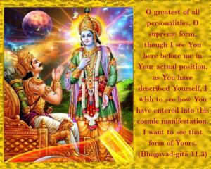
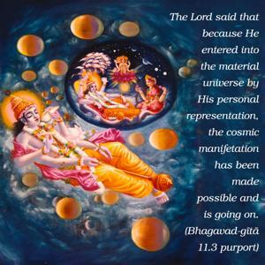
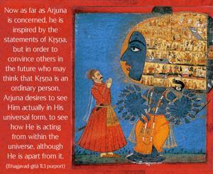
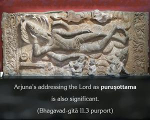
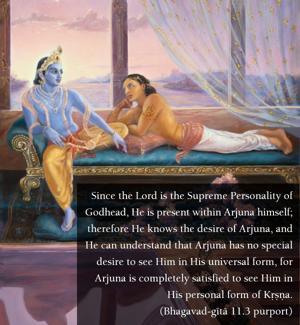
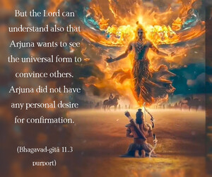

O greatest of all personalities, O supreme form, though I see You here before me in Your actual position, as You have described Yourself, I wish to see how You have entered into this cosmic manifestation. I want to see that form of Yours.






The Lord said that because He entered into the material universe by His personal representation, the cosmic manifestation has been made possible and is going on. Now as far as Arjuna is concerned, he is inspired by the statements of Kṛṣṇa, but in order to convince others in the future who may think that Kṛṣṇa is an ordinary person, Arjuna desires to see Him actually in His universal form, to see how He is acting from within the universe, although He is apart from it. Arjuna’s addressing the Lord as puruṣottama is also significant. Since the Lord is the Supreme Personality of Godhead, He is present within Arjuna himself; therefore He knows the desire of Arjuna, and He can understand that Arjuna has no special desire to see Him in His universal form, for Arjuna is completely satisfied to see Him in His personal form of Kṛṣṇa. But the Lord can understand also that Arjuna wants to see the universal form to convince others. Arjuna did not have any personal desire for confirmation. Kṛṣṇa also understands that Arjuna wants to see the universal form to set a criterion, for in the future there would be so many imposters who would pose themselves as incarnations of God. The people, therefore, should be careful; one who claims to be Kṛṣṇa should be prepared to show his universal form to confirm his claim to the people.